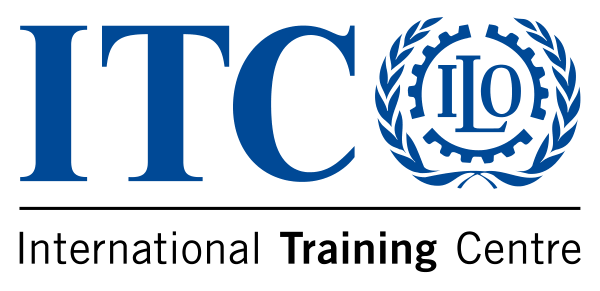
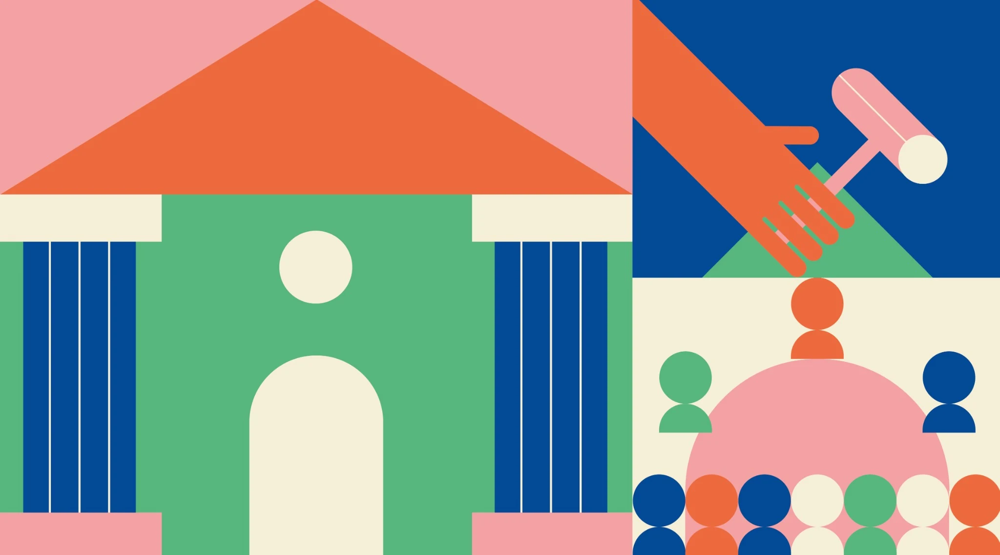

PLATFORM ECONOMY · SESSION 1
DOES IT SURVIVE?
Five gates, a cross-border twist, and a sixth gate. Discuss, defend and follow your case.
Join gameFacilitator
DIVERSE PRACTICES, SHARED GOALS
Your space to connect, explore and turn ideas into action—throughout the week and beyond.
Explore the conversation →Start here →16–20 NOV · Online preparation
23–27 NOV · Together in Turin
30 NOV–4 DEC · Online consolidation

KEEP THE CONVERSATION WITH YOU
Open the dashboard on your phone. For a live activity, enter the room code shown by your facilitator.
PLATFORM ECONOMY · SESSION 1
Five gates, a cross-border twist, and a sixth gate. Discuss, defend and follow your case.
Join gameFacilitatorPLATFORM ECONOMY · SESSION 2
Article Sprint, Model Market and the Green Challenge. Same teams, scores carried over.
Join gameFacilitator